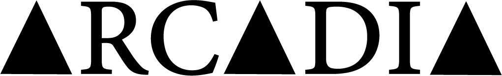

noun / ar‧ca‧dia
a real or imaginary place of rural peace, rustic innocence, and simple quiet pleasure. the term comes from a mountainous region in Greece that became a symbol of an ideal, untroubled life in nature.